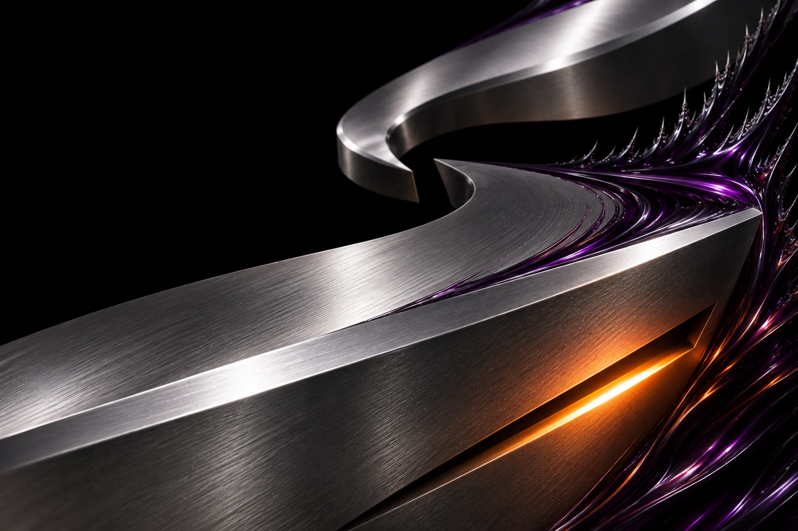

Núcleo
Matéria sob
tensão.
Duas lâminas de titânio abrem o S. Ao redor, o fluido escuro acompanha a curva e revela um campo violeta.
Explorar os materiais
Três detalhes
de perto.
-
Titânio escovado
A escovação acompanha a curva. O chanfro captura uma faixa de prata que destaca a espessura da lâmina.
-
Campo magnético
Os filamentos escuros deixam reflexos violetas nas bordas. A luz revela o movimento da forma mesmo em repouso.
-
Fresta Brasa
A emissão vem de dentro da peça e rebate na face escovada. Na interface, esse âmbar destaca as ações principais.